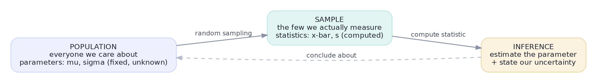
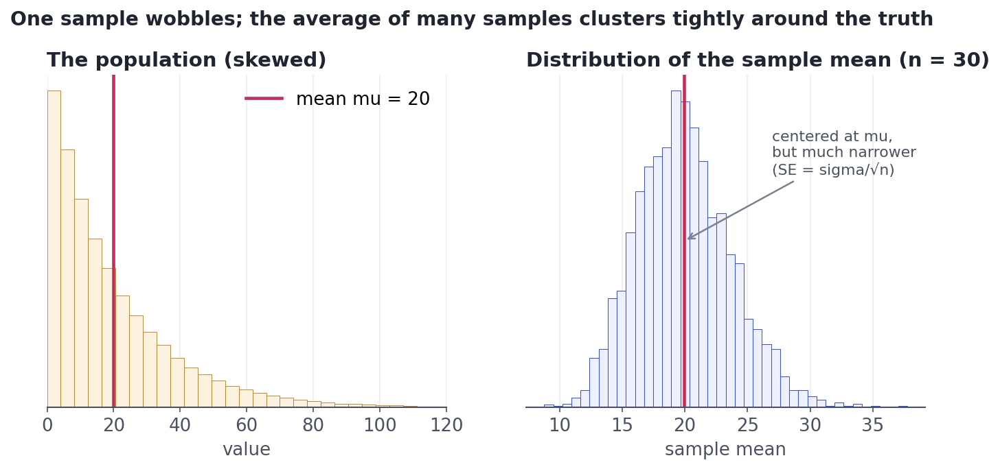
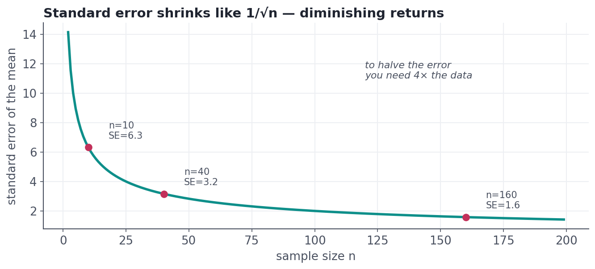

Populations, Samples & Sampling Variability
Why a sample is never the whole truth, and how to measure how much it wobbles from sample to sample.
Every number you will ever report — an average order value, a conversion rate, a churn figure — is computed from a sample, not the whole world. Pull a different sample and the number shifts. If you can't say how much it would shift, you can't say whether a difference is real. This lesson makes that wobble precise, and it's the hinge the rest of statistics swings on.
Concept · four wordsPopulation, sample, parameter, statistic
Four terms, used precisely from here on:
- The population is everyone or everything you care about (all your customers, all possible visitors). Usually too big to measure fully.
- A sample is the subset you actually observe.
- A parameter is a number describing the population — the true mean μ (mu) or true standard deviation σ (sigma). It is fixed but unknown.
- A statistic is the matching number computed from your sample — the sample mean x̄ (x-bar) or sample SD s. It is known but varies from sample to sample.
The entire game of inference is using the statistic you can see to estimate the parameter you can't, while being honest about the gap.

Concept · the key ideaSampling variability and the sampling distribution
Here's the thought experiment that unlocks everything. Imagine repeating your study many times — each time drawing a fresh sample of the same size and computing its mean. Those means won't all be equal; they'll scatter. The distribution of a statistic over all those imagined repetitions is called the sampling distribution.
It has two beautiful properties, shown below: it is centered on the true parameter (so the sample mean is right on average), and it is much narrower than the population (averaging cancels out individual extremes).

Concept · the number that mattersStandard error: the size of the wobble
The spread of that sampling distribution has a name: the standard error (SE). It measures how much your statistic would bounce around from sample to sample. For a sample mean it has a clean formula:
the population SD divided by the square root of the sample size n
Do not confuse standard deviation and standard error. The SD describes the spread of individual data points (how varied are customers?). The SE describes the spread of a statistic (how much would the sample mean wobble?). SE = SD / √n, so the SE is always smaller, and it shrinks as you collect more data.

Worked exampleSee it in code
Let's make the wobble concrete. We'll build a known population, take one realistic sample, then (because it's a simulation) cheat by repeating the study 1,000 times to watch the sample mean scatter — and confirm the spread matches the SE formula.
import numpy as np
rng = np.random.default_rng(0)
# A known population: 100,000 customers' order values (skewed, true mean ~50).
population = rng.gamma(shape=5.0, scale=10.0, size=100_000)
mu, sigma = population.mean(), population.std()
print(f"TRUE population mean mu = {mu:.2f}")
# Reality gives you ONE sample of 50 customers.
one_sample = rng.choice(population, size=50)
print(f"one sample's mean x-bar = {one_sample.mean():.2f} (off by {one_sample.mean()-mu:+.2f})")
# Simulation luxury: repeat the study 1,000 times and watch x-bar scatter.
means = np.array([rng.choice(population, 50).mean() for _ in range(1000)])
print(f"\nspread of those means (the standard ERROR) = {means.std():.2f}")
print(f"formula prediction sigma/sqrt(n) = {sigma/np.sqrt(50):.2f} <- they match")TRUE population mean mu = 50.03 one sample's mean x-bar = 51.55 (off by +1.51) spread of those means (the standard ERROR) = 3.21 formula prediction sigma/sqrt(n) = 3.16 <- they match
One sample landed a couple of units off the truth — that's sampling variability, not a mistake. The simulated spread of the means matches σ/√n almost exactly. In real life you only get the one sample, but the formula hands you the standard error anyway, which is the whole point: you can quantify your uncertainty from a single sample.
★ Key points to remember
- A parameter (μ, σ) describes the population and is fixed but unknown; a statistic (x̄, s) is computed from a sample and varies.
- The sampling distribution of the mean is centered on μ and far narrower than the population.
- The standard error SE = σ/√n is the spread of that sampling distribution — how much your estimate wobbles.
- SD ≠ SE. SD is the spread of data points; SE is the spread of a statistic, and it shrinks with more data.
- Because error falls as 1/√n, halving uncertainty needs 4× the data.
◆ Practice▸
Show solution & reasoning
Because a random sample's average is centered on the truth and its wobble (standard error) depends on the sample size, not the city size — 500 random people pin the average down quite tightly. The catch is random: if the 500 aren't representative (e.g., only daytime mall-goers), no amount of math fixes the bias. Size controls variance; only good sampling controls bias.
Show solution & reasoning
SE = 30/√25 = 30/5 = $6. To reach SE = $2 you need σ/√n = 2, so √n = 30/2 = 15, n = 15² = 225 orders. (Sanity check: going from SE $6 to $2 is a 3× reduction, requiring 3² = 9× the data: 25 × 9 = 225.)
◎ Deep dive: random sampling, and why bias is worse than variance▸
Size fixes variance; only sampling fixes bias. The standard error formula assumes a random sample — every member of the population equally likely to be chosen. When that breaks, you get bias: a systematic error that more data won't cure.
Classic failures: selection bias (the 1936 Literary Digest poll sampled car and phone owners and confidently predicted the wrong US president from 2.4 million responses); non-response bias (the people who answer differ from those who don't); and survivorship bias (studying only the survivors — reinforcing returning planes' bullet holes instead of the planes that never came back). In every case a bigger biased sample is just a more-confidently-wrong sample.
The lesson: a small random sample beats a huge convenient one. Before trusting any statistic, ask not only how big? but how was it drawn?
The most common version is "what's the difference between standard deviation and standard error?" Answer crisply: SD measures the spread of individual data points; SE measures the spread of a statistic (like the mean), and equals SD/√n. Bonus points for adding that SE shrinks with sample size, which is why bigger samples give more precise estimates.